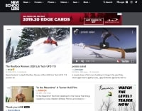
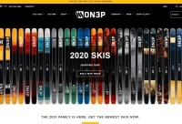
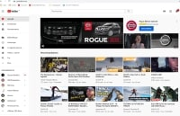

Horizontal Menu Article
Newschoolers
This website talks about skiing. It offers multiple possibilities such as blogging, selling ski gear, ski edits , etc. It is my favorite website because I love skiing and this website has everything about it.
Acces NewSchoolers HereON3P
This website is an online shop for the company ON3P. It is a ski company that I admire because of their hand built skis. I have these skis and I could never buy any other ski. I like going on this website just to read about their new skis. There is even a section for their ski team that presents every pro skier that use their skis.
Access ON3P HereYoutube
Everyone knows about youtube. I love this website because It is where I go to watch ski videos. I am on youtube nearly 3-4 hours a day so I can say that this is the webste I use the most. Because I can't get enough of skiing, youtube helps me to relax and watch some skiing before going to bed or things like that.
Acces Youtube Here